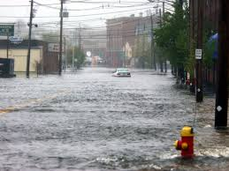
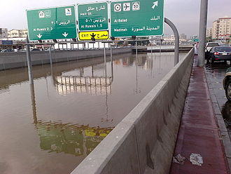
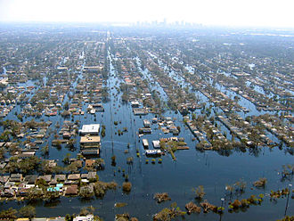
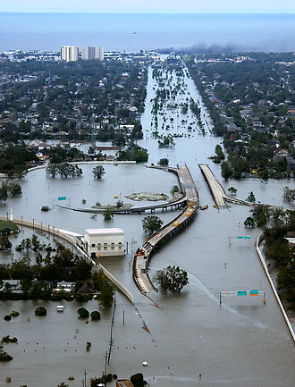

Floods
A flood is an overflow of water that submerges land that is usually dry. In the sense of "flowing water", the word may also be applied to the inflow of the tide. Floods are an area of study of the discipline hydrology and are of significant concern in agriculture, civil engineering and public health. Flooding may occur as an overflow of water from water bodies, such as a river, lake, or ocean, in which the water overtops or breaks levees, resulting in some of that water escaping its usual boundaries, or it may occur due to an accumulation of rainwater on saturated ground in an areal flood. While the size of a lake or other body of water will vary with seasonal changes in precipitation and snow melt, these changes in size are unlikely to be considered significant unless they flood property or drown domestic animals. Floods can also occur in rivers when the flow rate exceeds the capacity of the river channel, particularly at bends or meanders in the waterway. Floods often cause damage to homes and businesses if they are in the natural flood plains of rivers. While riverine flood damage can be eliminated by moving away from rivers and other bodies of water, people have traditionally lived and worked by rivers because the land is usually flat and fertile and because rivers provide easy travel and access to commerce and industry. Some floods develop slowly, while others can develop in just a few minutes and without visible signs of rain. Additionally, floods can be local, impacting a neighborhood or community, or very large, affecting entire river basins.
Areal
Floods can happen on flat or low-lying areas when water is supplied by rainfall or snowmelt more rapidly than it can either infiltrate or run off. The excess accumulates in place, sometimes to hazardous depths. Surface soil can become saturated, which effectively stops infiltration, where the water table is shallow, such as a floodplain, or from intense rain from one or a series of storms. Infiltration also is slow to negligible through frozen ground, rock, concrete, paving, or roofs. Areal flooding begins in flat areas like floodplains and in local depressions not connected to a stream channel, because the velocity of overland flow depends on the surface slope. Endorheic basins may experience areal flooding during periods when precipitation exceeds evaporation.
Riverine
Floods occur in all types of river and stream channels, from the smallest ephemeral streams in humid zones to normally-dry channels in arid climates to the world's largest rivers. When overland flow occurs on tilled fields, it can result in a muddy flood where sediments are picked up by run off and carried as suspended matter or bed load. Localized flooding may be caused or exacerbated by drainage obstructions such as landslides, ice, debris, or beaver dams. Slow-rising floods most commonly occur in large rivers with large catchment areas. The increase in flow may be the result of sustained rainfall, rapid snow melt, monsoons, or tropical cyclones. However, large rivers may have rapid flooding events in areas with dry climate, since they may have large basins but small river channels and rainfall can be very intense in smaller areas of those basins. Rapid flooding events, including flash floods, more often occur on smaller rivers, rivers with steep valleys, rivers that flow for much of their length over impermeable terrain, or normally-dry channels. The cause may be localized convective precipitation (intense thunderstorms) or sudden release from an upstream impoundment created behind a dam, landslide, or glacier. In one instance, a flash flood killed eight people enjoying the water on a Sunday afternoon at a popular waterfall in a narrow canyon. Without any observed rainfall, the flow rate increased from about 50 to 1,500 cubic feet per second (1.4 to 42 m3/s) in just one minute. Two larger floods occurred at the same site within a week, but no one was at the waterfall on those days. The deadly flood resulted from a thunderstorm over part of the drainage basin, where steep, bare rock slopes are common and the thin soil was already saturated. Flash floods are the most common flood type in normally-dry channels in arid zones, known as arroyos in the southwest United States and many other names elsewhere. In that setting, the first flood water to arrive is depleted as it wets the sandy stream bed. The leading edge of the flood thus advances more slowly than later and higher flows. As a result, the rising limb of the hydrograph becomes ever quicker as the flood moves downstream, until the flow rate is so great that the depletion by wetting soil becomes insignificant.
Esturine and Coastal
Flooding in estuaries is commonly caused by a combination of sea tidal surges caused by winds and low barometric pressure, and they may be exacerbated by high upstream river flow. Coastal areas may be flooded by storm events at sea, resulting in waves over-topping defenses or in severe cases by tsunami or tropical cyclones. A storm surge, from either a tropical cyclone or an extratropical cyclone, falls within this category. Research from the NHC (National Hurricane Center) explains: "Storm surge is an abnormal rise of water generated by a storm, over and above the predicted astronomical tides. Storm surge should not be confused with storm tide, which is defined as the water level rise due to the combination of storm surge and the astronomical tide. This rise in water level can cause extreme flooding in coastal areas particularly when storm surge coincides with normal high tide, resulting in storm tides reaching up to 20 feet or more in some cases."
Floods In Myanmar
There was a famous flood in Myanmar which caused many death. It is;
---------------
1. 2015 Myanmar Floods
See more about myanmar floods by clicking ----